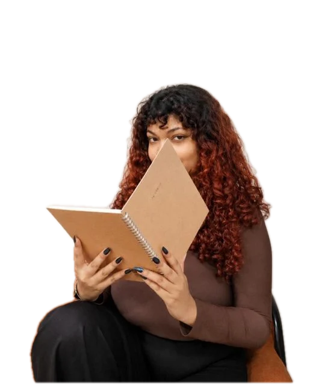
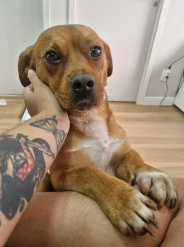

oi, eu sou a sabrina :)
lógica,decisão& glitter.
Sou Product Designer. Gosto daquela parte em que o briefing tem mil abas abertas. Meu trabalho é descobrir o que a pessoa precisa fazer e desenhar um caminho que faça sentido.





mensagem ♥lerabc
selecione um projeto
quatro cases,por dentro.

Conheci a internet nos anos 2000, quando um link abria outro e eu já nem lembrava o que tinha ido procurar. Minha parte favorita era descobrir a cara que cada pessoa dava ao seu cantinho da web.
Este aqui é o meu. Pode mexer nas janelas. Depois me conta qual delas te deu saudade. ♡

Como eu trabalho
Minha playlist de projeto
Ouvir antes de abrir o Figma
Converso com quem usa o produto e com quem o mantém. Onde a pessoa trava? O que já tentou? As respostas guiam o que vale investigar.
Escolher o que vem primeiro
Cruzo as necessidades das pessoas com as regras do negócio. Com o time, defino qual tarefa precisa ficar mais fácil primeiro.
Dar forma à ideia
Desenho o caminho principal, preparo as telas e monto um protótipo. É aqui que uma conversa sobre “um botão ali” ganha contexto.
Testar e ajustar o volume
Observo alguém tentando concluir a tarefa. Se uma etapa pede explicação demais, volto ao desenho. Depois, acompanho os detalhes com desenvolvimento.


sobre mim
prazer,sabrina.
Moro em São Paulo e há mais de quatro anos desenho produtos digitais. Gosto de acompanhar a ideia inteira, da primeira conversa com quem usa até aquele detalhe que ajusto com desenvolvimento.
Na Toodoo, conduzo workshops com clientes e desenho jornadas para web e mobile. Também trabalho em tempo parcial na Sevn Technologies, onde cuido do design de produtos e da evolução da identidade visual.
Estudei Comunicação e Design na UFPE e hoje curso Web Design na FIAP. O gosto por recortes veio junto nessa mudança de tela.
- product design
- web design
- ux/ui
- discovery
- design system
- white label
contato
boraconversar?
Briefing pronto ou ideia no rascunho? Me conta quem usa o produto e qual parte você quer repensar.
sabrina diz: oi! pode puxar uma cadeira.
sabrina diz: pra falar de projeto, me chama no WhatsApp. ♥
© 2026 Sabrina Pasti · feito em São Paulo, com um pouco de glitter